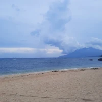

The island is mainly Christian with many denominations that reside. Catholic, Iglesia ni Cristo, and The Church of Jesus Christ of Latter-Day Saints to name a few. During Holy Week, the entire island is known for the Moriones Festival. It is when the locals dress up as Roman Soldiers and parade around their main towns. An reenactment of Longinus, the blind soldier who punctured Jesus Christ with a spear has his vision restored from droplets of blood due to the wound.
Barangay Poctoy is famous for Poctoy White Beach. It is a beautiful white sanded beach, with many activates available. Kayaking, snorkeling, basking under the sun, and camping are some examples that you can do. Plenty of restaurants are available where freshly caught seafood can be ordered and cooked on the spot for you to get something to eat while at there. There is a reef off the coast of the beach for you to see plenty of aquatic life.
Transportation
Jeepney
Tricycle